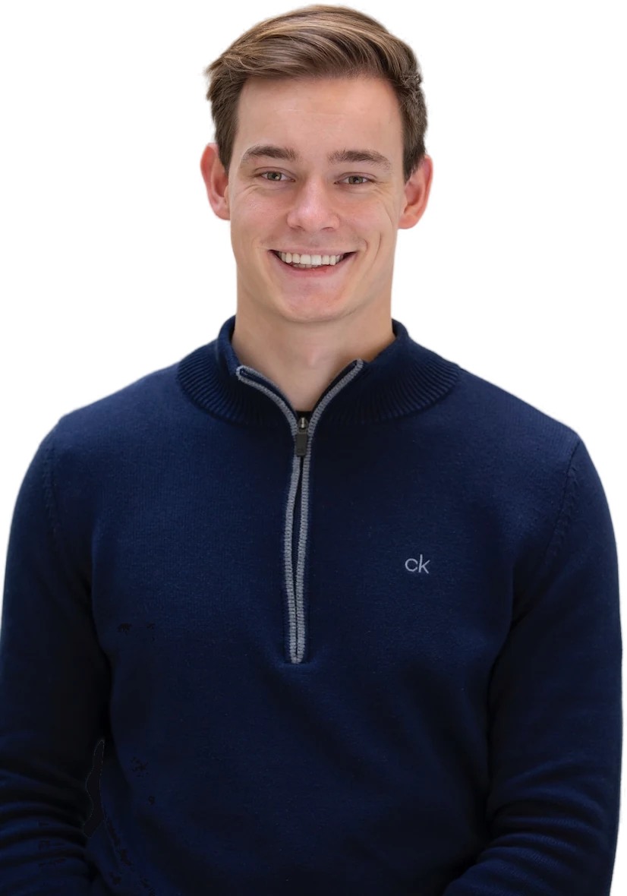

Für Veranstalter
Kurzbiografie und Fotos für Programmheft, Website und Ankündigung.
Kurzbiografie
Fabian Lechner leitet den Zentralen Dienst KI & Daten bei AGAPLESION, einem der großen gemeinnützigen Klinikverbünde in Deutschland. Er promoviert an der Philipps-Universität Marburg zu großen Sprachmodellen in der Medizin. Seit 2022 hat er über 85 Vorträge, Panels und Workshops zu KI in der Medizin gehalten, viele davon CME-zertifiziert.
Ausführliche Fassung
Fabian Lechner leitet den Zentralen Dienst KI & Daten bei AGAPLESION, einem der großen gemeinnützigen Klinikverbünde in Deutschland. Den Bereich mit Teams für KI, Daten, Anwendungen und Business Intelligence hat er 2025 aufgebaut; zuvor beriet er den Vorstand als Scientific Advisor. Parallel promoviert er an der Philipps-Universität Marburg zur Anpassung und Bewertung großer Sprachmodelle für medizinische Anwendungen. Zu seinen Arbeiten gehören der virtuelle Doktor in der Telefonzelle auf der Bundesgartenschau 2023, leitlinienbasierte Chatbots für die Brustkrebsversorgung und der rheumatologische Benchmark RheumBench. Er studierte Business Studies und Information Technology an der FH Aachen sowie Information Systems an der Philipps-Universität Marburg. Seit 2022 hat er über 85 Vorträge, Panels und Workshops für Fachgesellschaften wie DDG und DGIM, Kliniken, Krankenkassen und die forschende Industrie gehalten, viele davon CME-zertifiziert. Er spricht Deutsch, Englisch und Italienisch.
Pressefotos


Porträt, freigestelltPNG mit transparentem Hintergrund, 826 × 1180 px

Sprachen: Deutsch, Englisch, Italienisch.